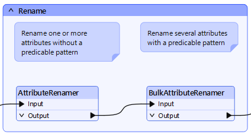
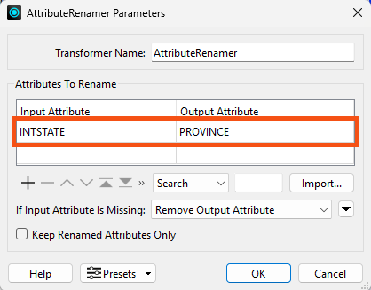
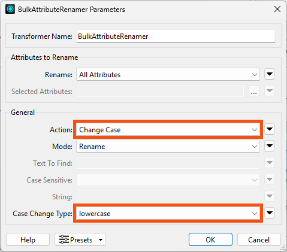
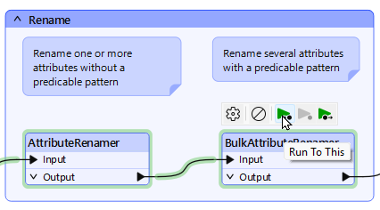
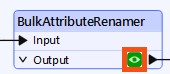
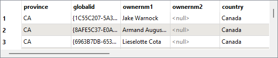

After completing this lesson, you'll be able to:
Renaming and - to a lesser extent - copying attributes are also important attribute functions within FME. When you rename an attribute, it ceases to exist under its prior name; when it is copied, it exists both in its new and old names.
The transformers capable of renaming an attribute are:
| Transformer | Capability |
|---|---|
| AttributeCopier | Copy |
| AttributeCreator | Copy |
| AttributeManager | Copy and Rename |
| AttributeRenamer | Rename |
The purpose of renaming is to manually enter a new name for a selected attribute. The old attribute is removed and replaced with the newly named one:
Here, an AttributeManager renames several fields by entering a different name for the Output Attribute. The Action is automatically set to Rename. Notice that the user also enters a new constant value for the PSTLCITY/PostalCity attribute.
You should rename attributes so your reader schema ('what you have') matches your writer schema ('what you want').
Although you can manually type a new attribute name into the Output Attribute field, if the transformer is connected to a writer feature type with the correct attributes, its attribute names will be automatically available for selection.
Depending on the transformer, copying an attribute can be one of two styles.
Here, a user configures an AttributeCopier by choosing an existing attribute and entering a new name. Again, when connected to a writer feature type, its schema is available so you can choose a matching attribute.
Note how both PSTLCITY and PostalCity exist on the transformer's output, proving that it is copying the attribute rather than renaming it.
For other transformers, the setup style is reversed: a new attribute is created and given the value of an existing attribute:

In this AttributeManager transformer, the user creates a new attribute (PostalCity) and assigns it the value from another (PSTLCITY). In effect, they have made a copy of the original attribute.
Usual attribute renaming involves selecting individual attributes to modify. However, in some cases, it's important to be able to carry out the same renaming operation on a large number of attributes.
This scenario is catered for by the BulkAttributeRenamer transformer.

The BulkAttributeRenamer carries out the core function of renaming attributes. But instead of manually specifying each attribute, this transformer lets the user apply a renaming action to All Attributes or Selected Attributes.

The rename actions available are:

The power of the transformer is its ability to rename multiple attributes at once without having to select them all individually. Here, for example, the incoming attributes are all being renamed to lowercase names to match a writer schema that does not support uppercase:
Multiple transformers can be used to create a cumulative effect. Here, for example, the user has converted to lowercase and then used a second transformer to add a prefix:

Jennifer would like to rename some of her attributes to match the required bulk mailing schema.
Jennifer opens the starting workspace (C:\FMEData\Workspaces\TransformAttributes\renaming-and-copying-attributes.fmw) in FME Workbench (2025.0.1 or later).
Jennifer chose to use an AttributeRenamer and BulkAttributeRenamer in her workspace:

She opens the AttributeRenamer parameters.
She chooses INTSTATE for the Input Attribute and types in PROVINCE as the new name for this attribute:

She clicks OK.
She opens the BulkAttributeRenamer parameters.
She wants to rename all the attributes to use lowercase. So, she chooses Change Case for Action and Change Case Type to lowercase:

She clicks OK.
She uses Run To This on the BulkAttributeRenamer:

She inspects the BulkAttributeRenamer's Output cache:

She confirms the province attribute is present and all attribute names have been set to lowercase:
